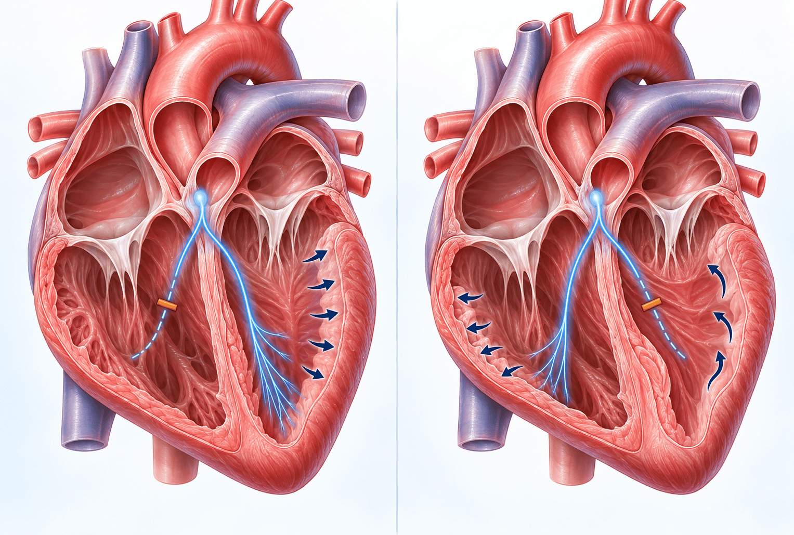

각차단이란 — 심실로 가는 전기 신호의 길 한쪽에 장애가 생긴 상태

심전도에서는 이렇게 보입니다
우각차단(RBBB)은 가슴 쪽 V1 유도에서 R파가 크게, 좌각차단(LBBB)은 V1 유도에서 S파가 깊게 나타납니다. 두 경우 모두 QRS의 폭이 정상보다 훨씬 넓어집니다.
우각은 오른쪽 심실, 좌각은 왼쪽 심실로 가는 길입니다. 오른쪽에 생기면 왼쪽 심실의 움직임에는 영향이 없어 심장 기능에 크게 문제가 되지 않습니다. 왼쪽 길에 장애가 생기면 왼쪽 심실이 고르게 수축하지 못하고 기우뚱기우뚱 뛰게 되어 좌심부전(왼쪽 심장의 펌프 기능 저하)이 생길 수 있습니다.
겉으로는 멀쩡해 보여도 심전도에서 발견되는 경우가 많아, 스웨덴 중년 남성을 28년 가까이 추적한 연구에서 각차단 비율은 50대 남성 약 1%, 80대 약 17%였습니다.
28년 추적 연구로 본 차이 — 각차단이 없는 사람과 비교
각차단이 있는 비율
1% → 17%
50대 남성 → 80대 남성
우각차단 — 사망률·심질환
차이 없음
방실차단 약 3배 · 인공심박동기 약 5배
좌각차단 — 사망률
약 2배
심질환 2~5배 · 방실차단 16배 · 심박동기 11배
좌각차단 → 좌심실 수축 기능 저하로 진행
36%
QRS 폭이 정상인 군은 10% · 상대위험 3.78
방실차단은 윗방(심방)에서 아랫방(심실)으로 가는 전기 신호가 늦어지거나 끊기는 상태, 인공심박동기는 맥박이 너무 느릴 때 전기 신호를 대신 보내 주는 기계입니다. 좌각차단의 사망률 증가는 관동맥질환(심장 혈관 병)에 의한 사망으로 정리되었습니다.
 우각차단과 좌각차단 — 이렇게 다릅니다
우각차단과 좌각차단 — 이렇게 다릅니다
| 구분 | 우각차단 (RBBB) | 좌각차단 (LBBB) |
|---|---|---|
| 심장 기능에 미치는 영향 | 오른쪽 심실의 길이라 왼쪽 심실 움직임에 영향이 없습니다. 장기 경과가 각차단 없는 사람과 차이가 없어 대체로 큰 문제가 되지 않는 양성(benign) 소견으로 보며, 증상이 없으면 경과만 지켜봅니다. | 왼쪽 심실의 수축이 방해받아 심부전이 늘고 사망률이 약 2배로 증가합니다(슬라이드에는 2~3배로 정리). 이미 심근경색이나 심부전이 있는 분에게는 각차단이 있으면 사망률이 뚜렷하게 높아집니다. |
| 숨은 질환과의 관계 | 일반인에게 흔히 보이며, 다른 이상 없이 단독으로 있으면 대부분 특별한 치료가 필요하지 않습니다. 다만 방실차단은 약 3배 늘어납니다. | 대동맥판막 협착(심장 판막이 좁아지는 병), 허혈성 심질환(심장 혈관이 좁아져 생기는 병) 등 숨어 있는 다른 질환과 연관이 많습니다. |
| 진료 대책 | 별도의 증상이 없으면 추가 검사 없이 경과 관찰합니다. | 처음에 심장 초음파를 반드시 시행하고, 이후에도 정기적으로 추적합니다(뒷면). |
각차단이 있으면 협심증 같은 병이 없어도 ST 분절이 내려가거나 T파가 뒤집히는 변화가 자연스럽게 생깁니다. 연자는 이를 QRS 변화에 따라 수동적으로 따라오는 ‘이차 변화’라고 설명했습니다. 각차단이 없는데 ST-T만 따로 변했을 때와는 의미가 다르므로 결과지를 보여 주시고 진료 때 물어봐 주세요.